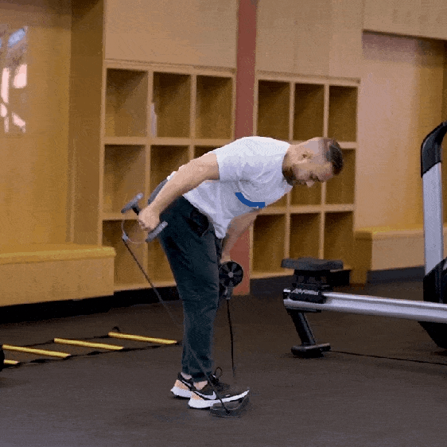

<ion-header mode="ios">
  <ion-toolbar mode="ios">
    <ion-buttons slot="start">
      <ion-back-button defaultHref="tabs/tab1"></ion-back-button>
    </ion-buttons>
    <ion-title>Ejercicios de Brazo</ion-title>
  </ion-toolbar>

</ion-header>

<ion-content>


  

  <ion-slides mode="ios" scrollbar="true" #brazoEjercicios options="slideOpts">
    <ion-slide>
      
      <div class="ion-padding">
        <h3>Curl tríceps martillo<br><span>cada brazo</span></h3>
        
        <h1 class="reps">x12</h1>
      </div>
      
      <ion-grid fixed>
        <ion-row>
          <ion-col offset="3" size="6">
            <ion-button (click)="siguiente()" expand="block"  shape="round">
              <ion-icon slot="start" name="checkmark-sharp"></ion-icon>
              <span>Listo</span>
            </ion-button>
          </ion-col>
        </ion-row>
      </ion-grid>

      <div>
        <ion-grid fixed>
          <ion-row>
            <ion-col size="6">
              <ion-button (click)="atras()" expand="block" fill="clear" shape="round">
                <ion-icon slot="start" name="play-skip-back-sharp"></ion-icon>
                Anterior
              </ion-button>
            </ion-col>
            <ion-col size="6">
              <ion-button (click)="siguiente()" expand="block" fill="clear" shape="round">
                <ion-icon slot="end" name="play-skip-forward-sharp"></ion-icon>
                Omitir
              </ion-button>
            </ion-col>
          </ion-row>
        </ion-grid>
      </div>
    </ion-slide>

    
  </ion-slides>


</ion-content>
